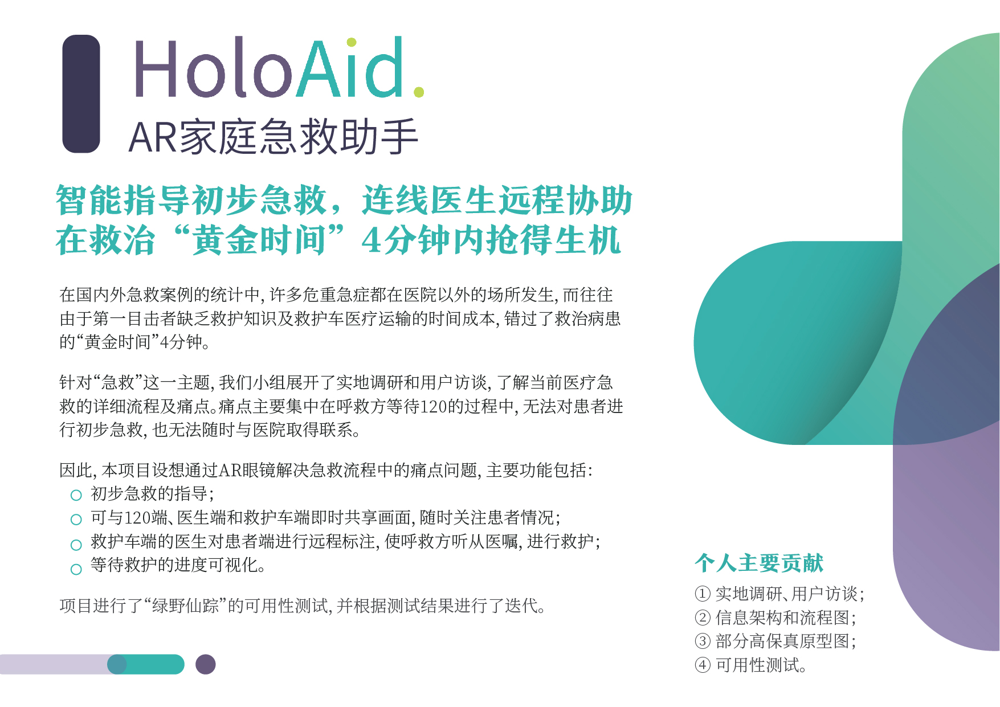
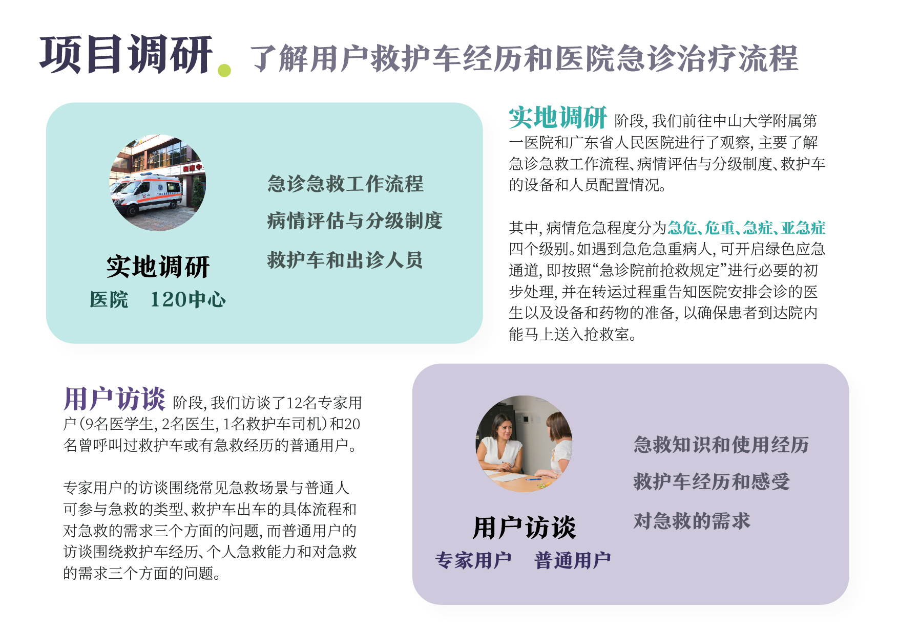
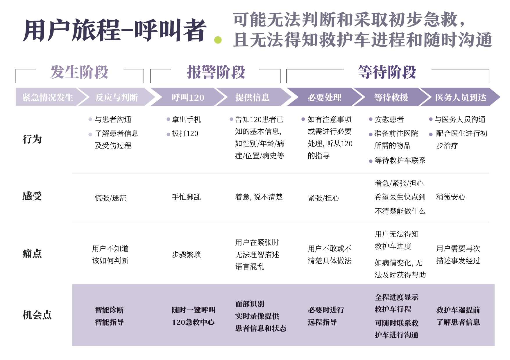
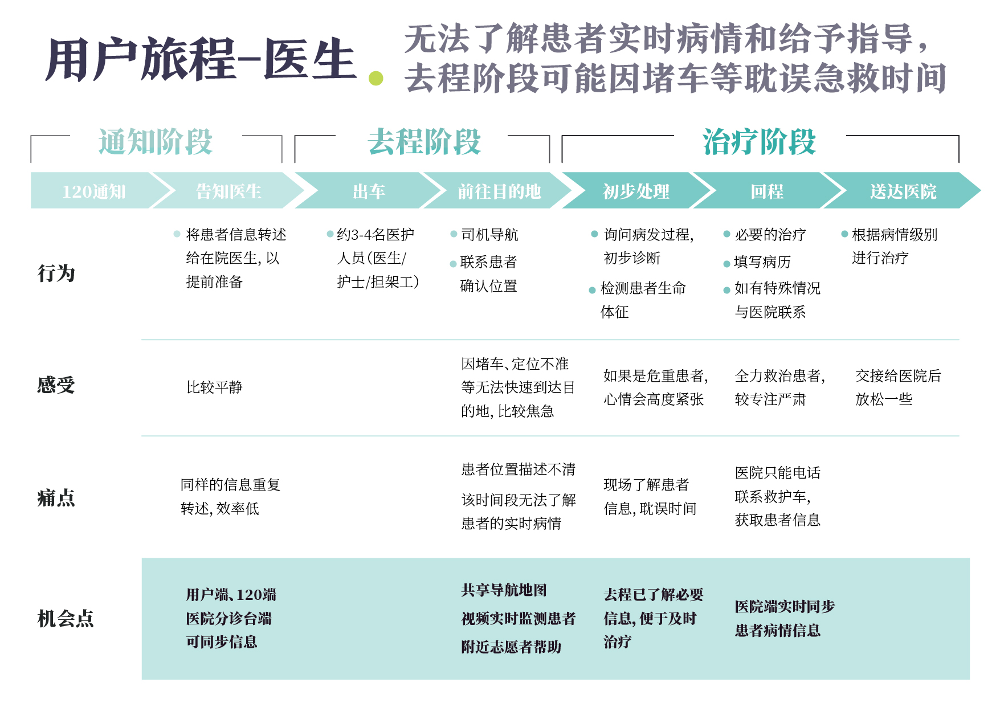
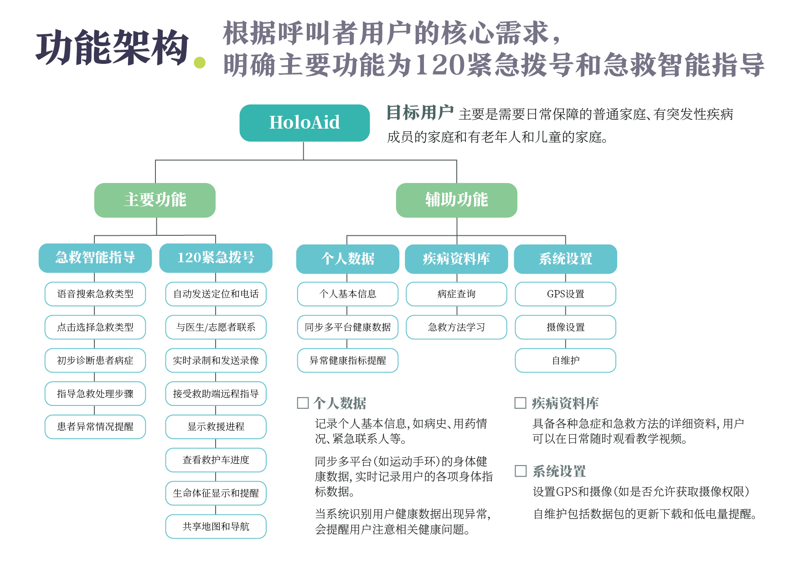
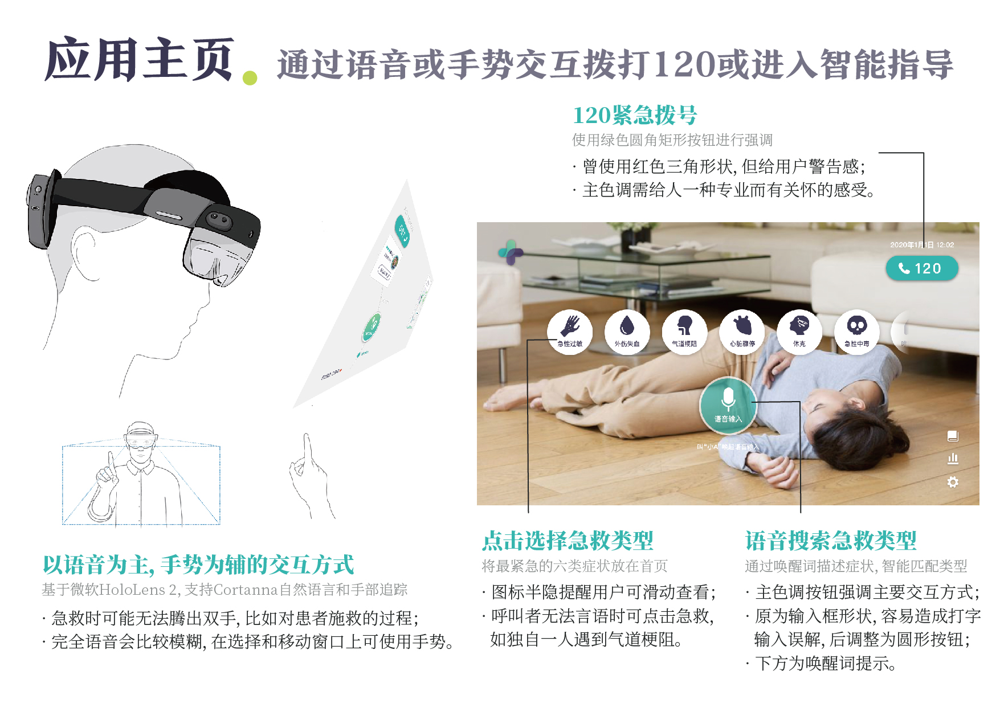
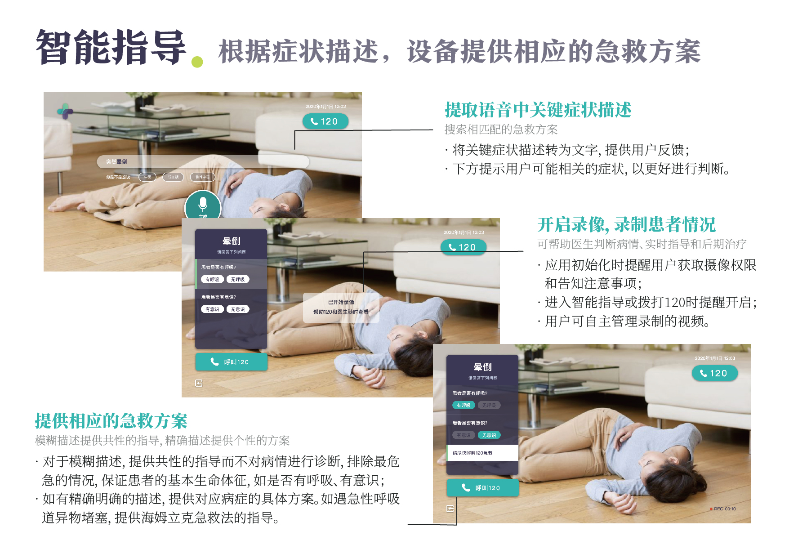
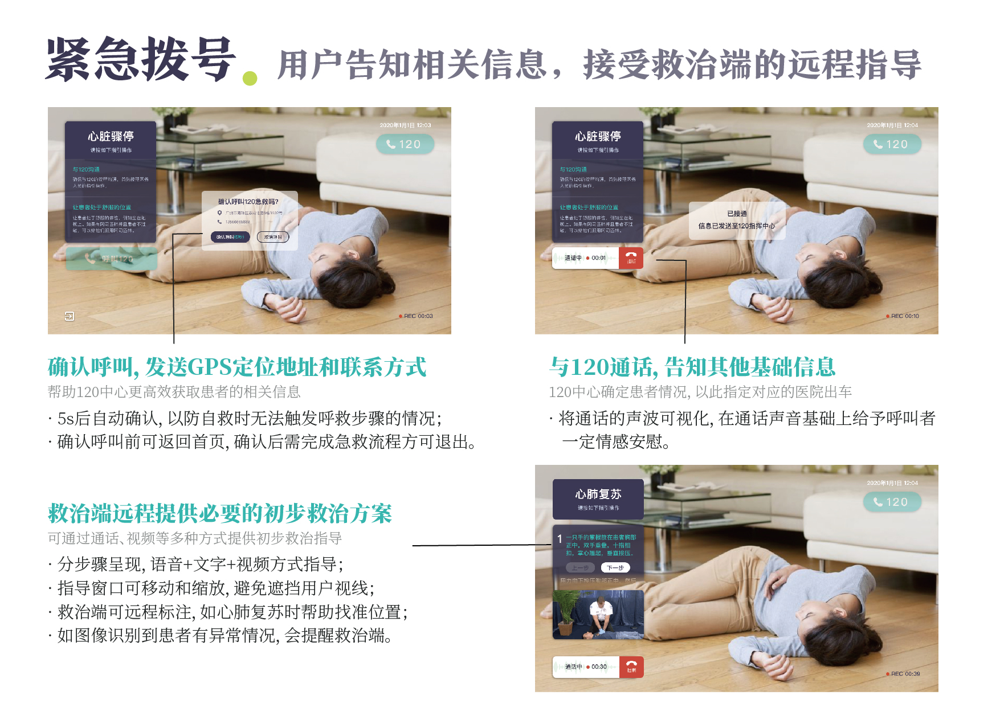
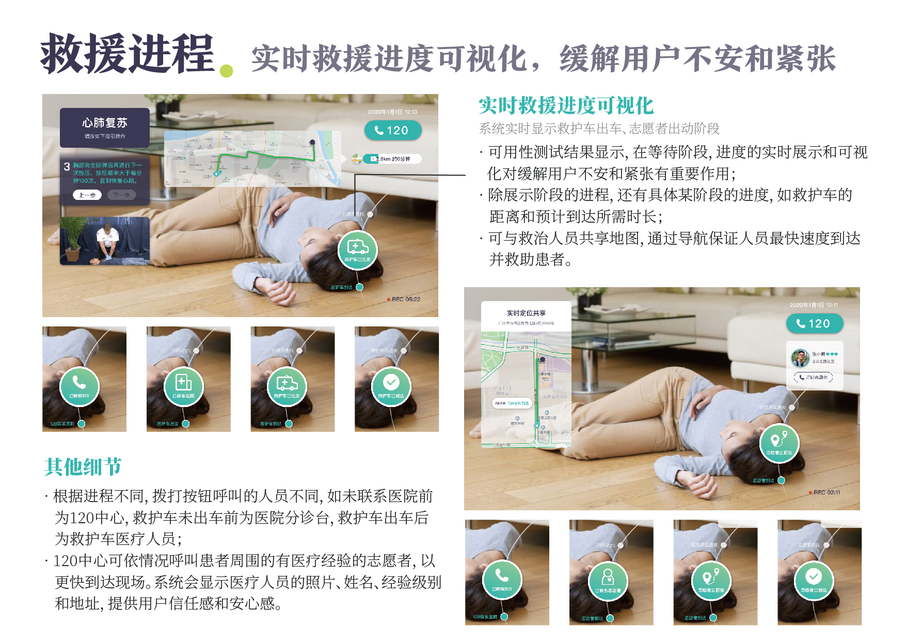
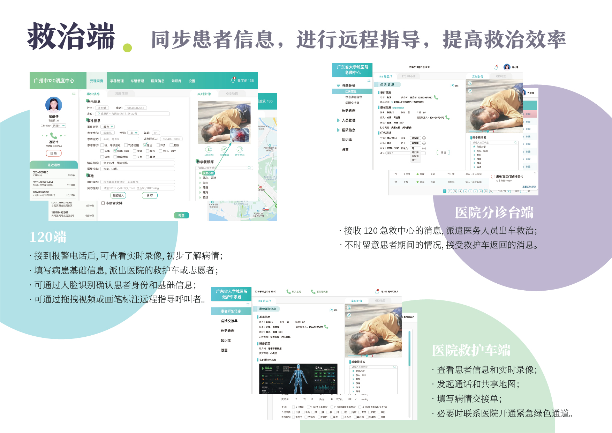

HOLOAID
AR家庭急救助手
项目简介
在国内外急救案例的统计中，许多危重急症都在医院以外的场所发生。而往往由于第一目击者缺乏救护知识及救护车医疗运输的时间成本，错过了救治患者的“黄金时间”。
我们小组针对“急救”这一主题展开了实地调研和用户访谈，提出通过AR眼镜解决流程中的痛点问题。项目主要亮点为智能指导初步急救、连线医生远程协助和等待救护进度可视化。
该项目为课程项目，完成于2019年1月3日。
小组成员包括冯婉莹、高冕、黄凯妮、刘颖欣和罗丹，排名不分先后。









